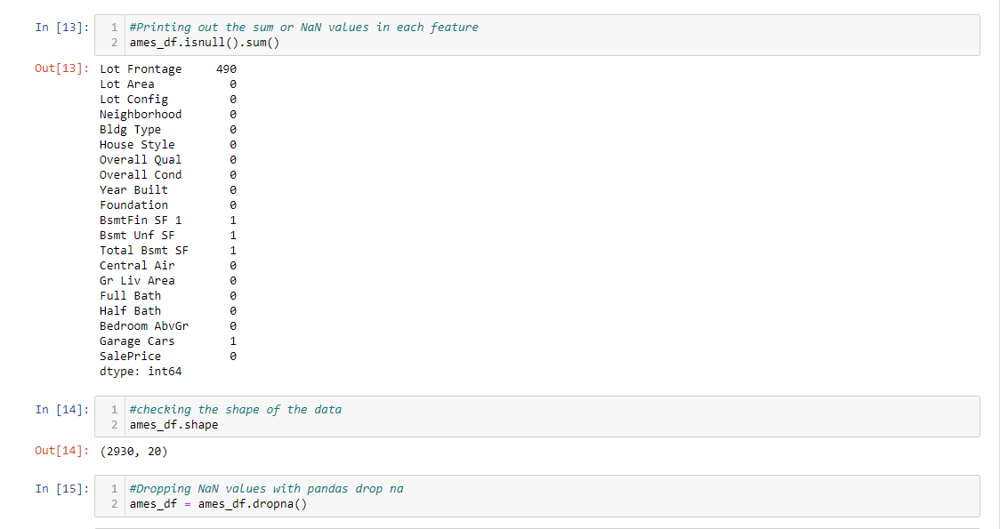
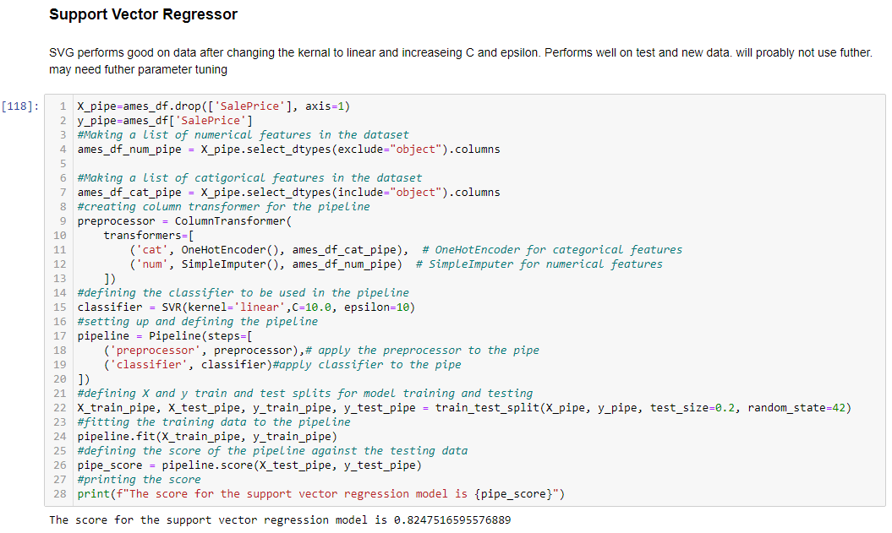

This is my housing price prediction project by Alex Berger. The goals of this project is to clean and process
housing data from Ames, Iowa then formulate a model to predict further new data. The project data analysis
and model development were done in Jupyter Notebook which will be shown in snippets below. The model in this application uses a Keras neural network.
This picture shows the first few rows of the data set and the features that the data set includes. There are 2,930 entries in the data set.This image shows the subfeatures of the categorical features and the features that were dropped before model prep because they were either
too confusing for model deployment or they were not of importance. There were 82 features before, that was reduced to 19.

This image shows the amount of missing values in the data setThis picture shows the mean of the numerical features of the data set. Below that shows a function to get outliers from the data set and then
we can see the values of the each numerical feature at each quantile. At the bottem of the picture it shows the numer of outliers in the data that fall above the
75th quantile and below the 25th quantile. There are 398 outliers.
This image shows the means after removing outliers and then displaying basic statisics on the featuresThis image shows a visual correlation matrixThis is a plot of the neighborhoods in the data set and there frequencies. Because location is a very important aspect of predicting home prices
it is important to see how neighborhood affects the data.
In this graph we can see which neighborhoods are more expensive and which are cheaper as well as being able to see there IQR ranges.In this plot we examine housing styles of the data, we can see that '1story' is the most popular by far then '2story' but the other house styles draw
confussion because I am unsure what they mean in the real-world.
This plot shows the feature 'Overall Qual'. Most of the values are for 5 and then increases down. There is strong correlation between
this feature and sale price
which is shown later.
This plot shows the 'Half Bath' feature and what is intresting about this feature is that the majority of the values are in 0 half baths, I was expecting
houses to have more half baths.This plot shows the distribution of values for 'SalePrice'.This plot shows the regression line plot of lot area against sale price. There is strong linear correlation.This plot shows the regression line plot for total basement sqft against sale price and also shows strong correlation with less noise in the pointsThis regression line plot of ground living area against sale price shows even stronger correlation however, a little more noise is the data but they still
seem evenly distributated.
Correlation matrix of the features.Start of the pipeline section of the notebook and where the model development starts. It first starts with a gradient boosted regressor model
which performed very well on the data.
The next model for the pipeline is a random forest model which performed similar to the GDR model.

This model is a support vecter regressor for the pipeline. This model performed well after hyperparameter tuning.This model is a neural network from Sklearn which performed okay, I would not use this model as is over the other but the model still performs
well on the test data.
This image shows the linear regression model that came up with an accuracy of 92.2% which is better than all the rest of the models. Would use this model in
application deployment because it is simply the best way I think to represent any housing data but I still wanted to build another neural network.
This is the nerual network that is being used for the application currently. The nerual network performs very well after test aganist the linear model and found that this
nerual network works just as well as the linear regression model. Graph of the epochs converging